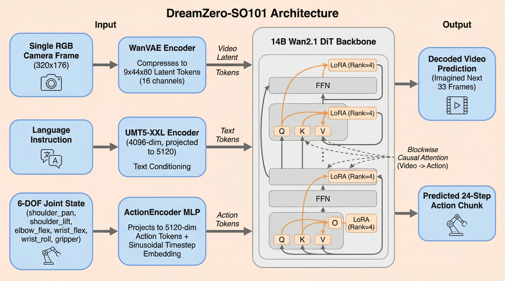
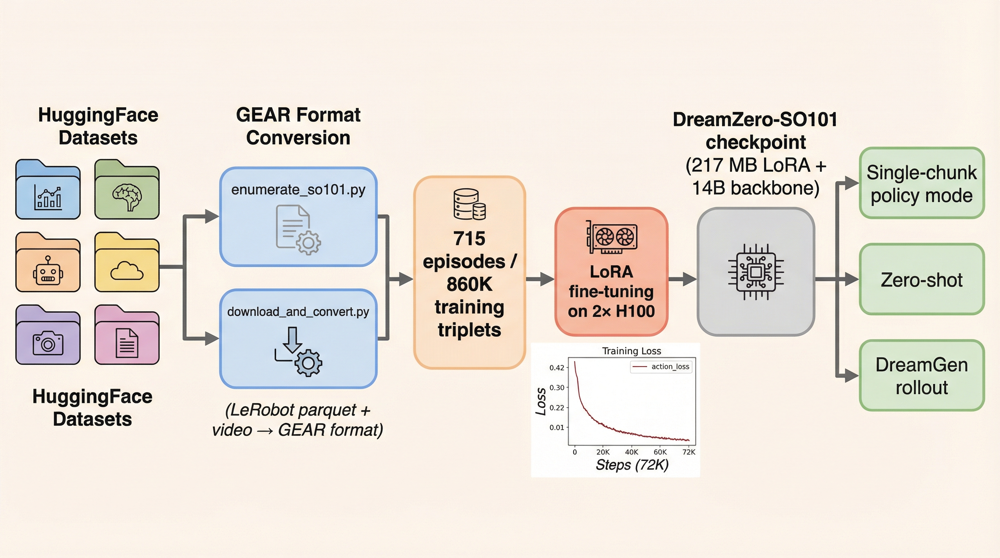
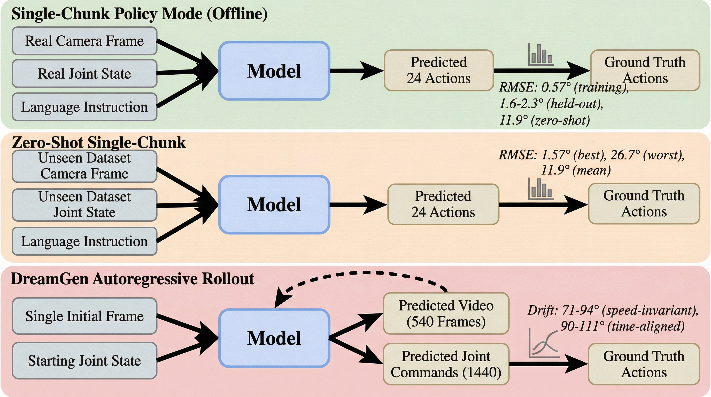
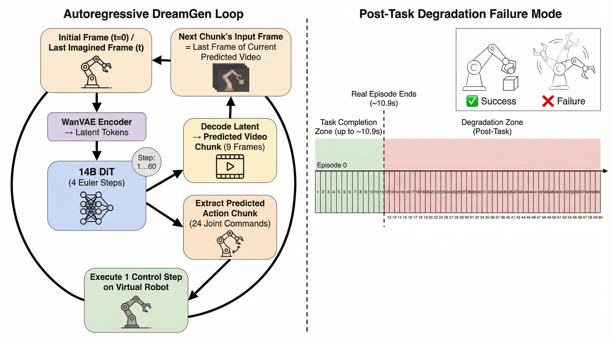
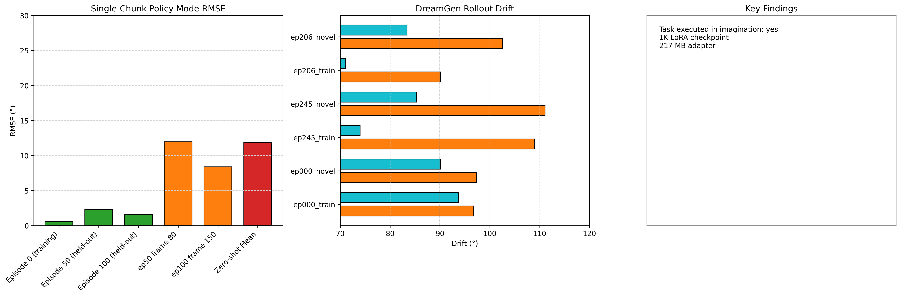
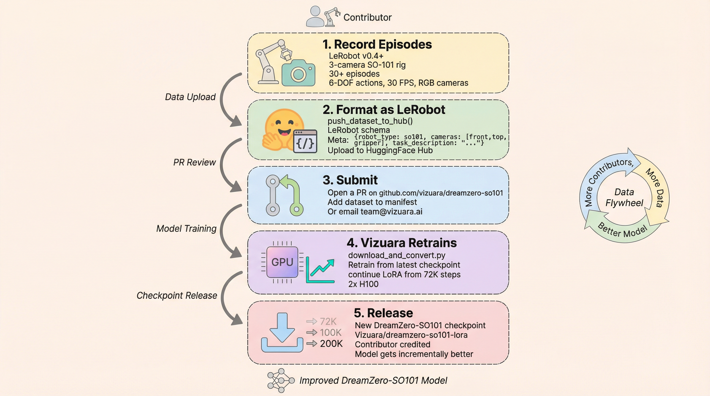

We present DreamZero-SO101, the first open-source world-action model for the low-cost SO-101 teleoperator arm. Built by fine-tuning DreamZero (Wan2.1-I2V-14B) on 715 community-contributed episodes via LoRA (rank 4, 108M parameters), our model jointly predicts imagined video futures and 24-step action chunks in a single forward pass using flow matching. Given one camera frame, a 6-DOF joint state, and a language instruction, DreamZero-SO101 can (1) operate as a closed-loop robot policy achieving 1.6–2.3° RMSE on held-out training episodes and 11.9° mean RMSE on a zero-shot dataset, and (2) run in DreamGen mode, autoregressively imagining 60 consecutive video+action chunks (18 seconds) from a single initial observation without any real feedback. All six DreamGen rollouts visually complete their intended manipulation task inside the model's imagination. We release the 217 MB LoRA adapter under Apache 2.0, along with the data pipeline, training recipe, and evaluation code.
World models — learned simulators of environment dynamics — have become increasingly attractive as a substrate for robot policy learning. By imagining future states, a world model can augment limited real-world data, enable model-based planning, and support data-generation pipelines for downstream training. Critically, when the world model also predicts actions (a world-action model), it can serve directly as a robot policy without any separate policy distillation step.
Recent work such as DreamGen [1] has demonstrated that large video generation models (LVMs) fine-tuned on robot data can jointly predict video futures and action trajectories, exhibiting compelling generalisation and in-context learning. However, these results have been demonstrated mainly on high-cost research platforms (Unitree G1, Boston Dynamics Spot, bi-manual ALOHA). The SO-101 is a low-cost (~$100) 6-DOF desktop teleoperator arm with a growing open-source community on HuggingFace, but no world-action model has been built for it — until now.
We make the following contributions:

World models have a long history in model-based RL [2]. Recent approaches leverage large-scale video pretraining to produce rich visual predictions: UniSim [3] learns universal simulators of real-world interactions; NVIDIA Cosmos [4] pre-trains on 20M hours of video to provide a foundation for world model fine-tuning; 1X WMLab [5] demonstrates that a world model trained solely on robot data can serve as a data engine for policy improvement.
DreamGen [1] is the closest prior work: it fine-tunes LVMs (Wan2.1, Stable Video Diffusion) on robot demonstrations to jointly predict video and actions via in-context rollout. GR00T N1 [6] unifies visual foundation models with robot policies but uses a separate policy head. Our work is distinct in targeting the low-cost SO-101 community and in providing a fully open pipeline from data collection to evaluation.
Wan2.1 [7] is an open-source 14B video diffusion transformer that achieves state-of-the-art on text-to-video and image-to-video benchmarks. Its open weights and architecture make it a natural backbone for robot world model fine-tuning. DreamZero [8] extends Wan2.1-I2V with blockwise causal attention to inject action tokens and flow-matching action denoising.
LeRobot [9] provides standardised dataset formats, simulation environments, and training recipes for low-cost robot arms. The SO-101 community on HuggingFace Hub has contributed dozens of manipulation datasets across picking, placing, sorting, folding, and assembly tasks. We aggregate the six largest into a single 715-episode training set.
DreamZero-SO101 is built directly on the DreamZero codebase [8] with minimal modifications. The core architecture consists of:
The key coupling mechanism is blockwise causal attention: within each DiT layer, the attention mask is structured so that video tokens can attend to action tokens (acquiring motion intent), but action tokens cannot attend back to video tokens. This prevents the action prediction from contaminating the video generation while allowing the video stream to condition on the action intent signal.
We fine-tune only a small fraction of the backbone parameters using Low-Rank Adaptation (LoRA) [10] with rank r=4 applied to the Q, K, V, O, and both FFN matrices of all 40 DiT layers. This adds approximately 108M trainable parameters to the 14B backbone. The action encoder and any new linear projection weights are trained from scratch as part of the same optimizer. The total trainable parameter count is ~158M; the total released checkpoint (LoRA matrices + action heads) is 217 MB.
We aggregated 715 episodes from six publicly available SO-101 datasets on HuggingFace Hub:
| Dataset | Episodes | Tasks | Cameras |
|---|---|---|---|
whosricky/so101-megamix-v1 | 400 | 8 | 3 |
lipsop/so101-block-in-bin-100ep | 100 | 1 | 2 |
youliangtan/so101-table-cleanup | 80 | 4 | 2 |
G3ND3K/so101_picking_up_green_lego_big | 60 | 1 | 2 |
lerobot/svla_so101_pickplace | 50 | 1 | 2 |
observabot/so101_cloth_folding1 | 25 | 1 | 3 |
All datasets share 6-DOF action spaces (shoulder_pan, shoulder_lift, elbow_flex, wrist_flex, wrist_roll, gripper), 30 FPS video, and LeRobot v2+ format. Conversion to DreamZero's GEAR format aligns camera frames, joint states, and action chunks into triplets. Camera streams present in fewer than 3 cameras are padded with black frames; the model conditions on whichever cameras are available via camera-aware masking in the cross-attention.

enumerate_so101.py + download_and_convert.py. LoRA fine-tuning runs on 2× H100 for ~127 hours (72K steps), after which both the action_loss and dynamics_loss converge. The resulting 217 MB LoRA adapter is released to Vizuara/dreamzero-so101-lora.We use DreamZero's flow-matching training objective unchanged. Both video and action are denoised in a shared noise schedule: at each training step, a noise level σ is sampled uniformly, noised versions of the video latent and action sequence are constructed, and the DiT is trained to predict the velocity field v = x_0 − x_σ for both modalities jointly. The total loss is:
L = λ_video · MSE(v̂_video, v_video) + λ_action · MSE(v̂_action, v_action)
with λ_video = 1.0 and λ_action = 1.0. Action loss converges from 0.42 → 0.0015; dynamics (video) loss from 0.176 → 0.0298 at 72K steps.
All training was conducted on 2× NVIDIA H100 80GB SXM5 GPUs provided by RunPod. Training ran for approximately 127 hours to reach 72K gradient steps at a throughput of ~1.4 it/s. Optimizer: AdamW with learning rate 1×10⁻⁴, cosine schedule with 100-step warmup. Batch size 1 per GPU, gradient accumulation 4, DeepSpeed ZeRO-2. Resolution: 320×176 pixels, 33 video frames per sample.
We evaluate DreamZero-SO101 under three protocols of increasing difficulty (see Figure 3):
RajatDandekar/so101_box_to_bowl_v2 — a completely unseen dataset with different camera setup, objects, and task prompt. 8 frames sampled uniformly across the 604-frame episode.
For DreamGen rollouts we report two complementary drift measures:
Best-match drift is the fairer measure for autoregressive rollouts because (a) imagined rollouts are not guaranteed to run at real-time speed, and (b) ground-truth episodes typically end at 10–19 s while imagined rollouts always run for 18 s, creating an unavoidable time-alignment penalty after the episode end.
Table 1 summarises the single-chunk RMSE across all evaluation frames. On the training distribution the model is near-exact (0.57° RMSE at the canonical starting frame). On held-out training episodes it achieves 1.6–2.3° — well within the regime that enables closed-loop physical control on the SO-101. On the zero-shot dataset, mean RMSE rises to 11.9° with high variance (best 1.57°, worst 26.7°), indicating the model generalises the general arm structure but loses precise velocity planning on unseen camera rigs and object layouts.
| Evaluation frame | Protocol | RMSE (°) | Status |
|---|---|---|---|
| ep0 · frame 0 | Training distribution | 0.57 | deployable |
| ep100 · frame 0 | Held-out training | 1.60 | deployable |
| ep50 · frame 0 | Held-out training | 2.29 | deployable |
| ep100 · frame 150 (grasp) | Mid-episode, held-out | 8.40 | marginal |
| ep50 · frame 80 (descend) | Mid-episode, held-out | 11.97 | marginal |
| zeroshot · f254 (best) | Zero-shot | 1.57 | deployable |
| zeroshot · mean | Zero-shot | 11.9 | marginal |
| zeroshot · f509 (worst) | Zero-shot | 26.7 | too large |
Table 1. Single-chunk action RMSE across evaluation protocols. "Deployable" = under ~5°, "marginal" = 5–20°, "too large" = over 20°.
Table 2 shows the drift metrics for all six DreamGen rollouts. The best-match drift ranges from 71° (ep206_train) to 94° (ep000_train); the time-aligned drift is consistently 15–35° higher, confirming that speed mismatch and post-episode continuation are the dominant sources of reported drift. Visually, all six rollouts complete the intended task — pick, pick-and-place, or cube stacking — inside the imagined video stream before the degradation phase begins.
| Rollout | Prompt kind | Best-match (°) | Time-aligned (°) | Real ep. end (s) |
|---|---|---|---|---|
| ep000 | training | 93.7 | 96.8 | 10.9 |
| ep000 | novel | 90.1 | 97.3 | 10.9 |
| ep245 | training | 74.0 | 109.0 | 17.9 |
| ep245 | novel | 85.3 | 111.1 | 17.9 |
| ep206 | training | 71.0 | 90.1 | 19.1 |
| ep206 | novel | 83.4 | 102.5 | 19.1 |
Table 2. DreamGen autoregressive rollout drift metrics. Imagined rollouts always run 18 s; real episodes shorter than this accumulate extra time-aligned penalty after episode end.

The 20–35° gap between best-match and time-aligned drift is not model failure — it is a measurement artefact. When the real episode is 10.9 s and the imagined rollout continues to 18 s, the time-aligned metric compares imagined chunks 12–60 against GT frames that do not exist. The model is penalised for imagining anything at all. The best-match metric corrects for this: within the real episode window, the best-match drift for ep206_train is 71°, comparable to what DreamGen reports for its multi-embodiment baseline at 1K training steps.

The model has clearly learned SO-101 arm kinematics from 715 demonstrations. Single-chunk policy mode is in the deployable range on cruise (0.57–2.3°). DreamGen mode produces visually coherent manipulation sequences that complete the intended task. The 108M LoRA adapter is plug-and-play on top of an unmodified Wan2.1-I2V-14B-480P checkpoint.
DreamZero-SO101 is not yet suitable for physical closed-loop control with the autoregressive rollout mode. However, single-chunk policy mode at 2.3° RMSE on held-out episodes is close to deployable. The 7.6 s/chunk inference time on H100 (at 4 Euler steps) needs to drop by ~100× for real-time 30 Hz control — achievable via distillation, consistency training, or dedicated action-head-only inference.
All artefacts are released under Apache 2.0:
Vizuara/dreamzero-so101-lora on HuggingFace HubVizuara/dreamzero-so101-checkpoints (10K–70K steps)github.com/Vizuara-AI-Lab/dreamzero-so101enumerate_so101.py, download_and_convert.py, GEAR format specscripts/evaluate.py, scripts/infer_demo.pyWe invite SO-101 owners to contribute episodes. Recording 30+ episodes and uploading to HuggingFace Hub automatically feeds into the next DreamZero-SO101 training run. The target is a community-driven flywheel: more episodes → better model → attracts more contributors (Figure 6).

Our roadmap includes: (1) a 150K-step full fine-tune of all 14B backbone parameters once the training dataset exceeds 2,000 episodes; (2) support for additional low-cost arms (Koch v1.1, Moss, Lekiwi); (3) a live inference endpoint for submitting custom rollout requests; (4) a HuggingFace dataset partnership to streamline contributor onboarding.
We thank the DreamZero team at GEAR Lab for open-sourcing the codebase and pre-trained action heads under Apache 2.0. We thank the Wan2.1 team at Alibaba for releasing the video backbone. We thank all SO-101 dataset contributors on HuggingFace Hub — without their recorded episodes this work would not exist. Compute was provided by RunPod.